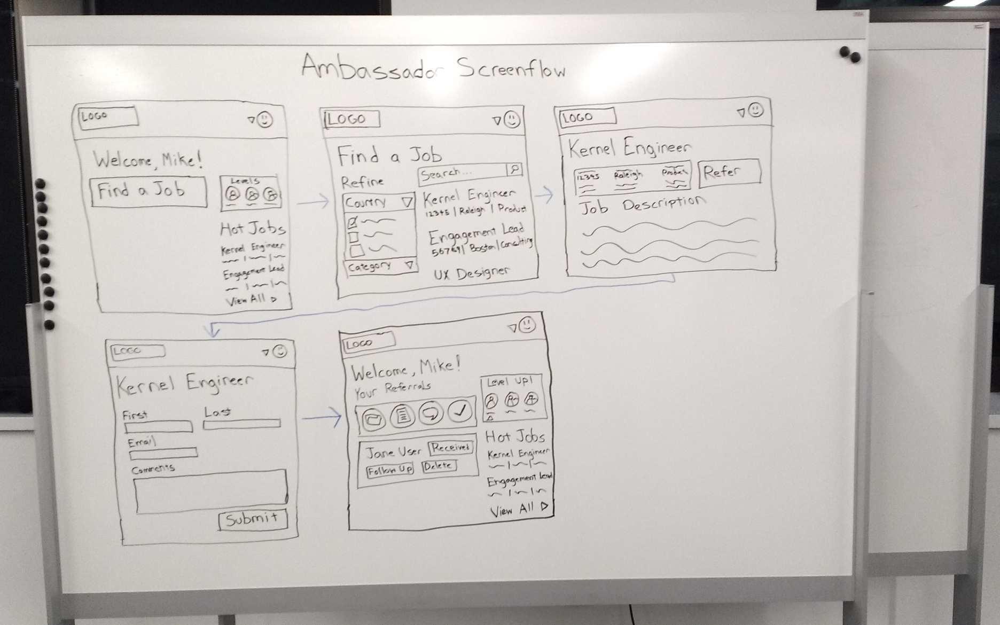
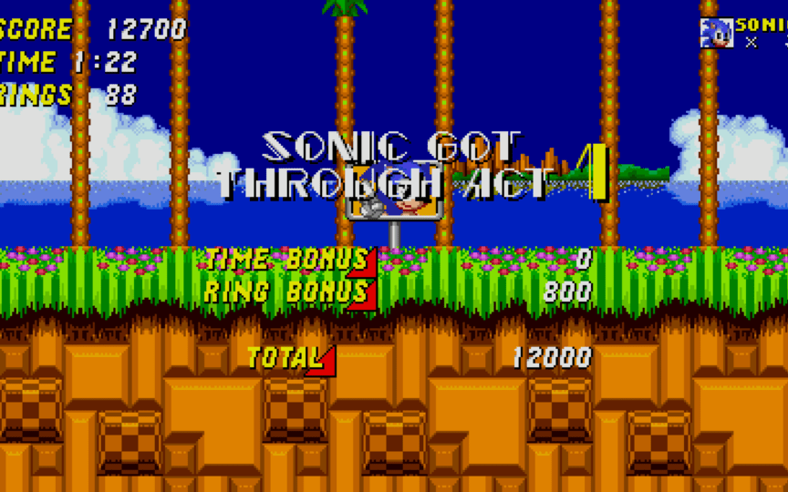

Gotta Prototype Fast!
Hi! I'm Ryan DeBeasi.
I'm a consulting engineer at Red Hat Open Innovation Labs.
Why are these so memorable?
Minimum Viable Sonic ™
So anyway, Labs
- 1–3 Months
- Discovery & Prep
- Week 1: Design
- Weeks 2+: Deliver
Typically work in 1-week sprints with a demo at the end of each one
Every residency is different
Disrupt / Transform / Road Trip
UX vs. infrastructure
Finished product vs. learning
The product owner is still learning
There may or may not be a dedicated UX designer
RH UX Designer
Client UX Designer
Hybrid UX + Dev Role
Find and empower a UX advocate
It's okay to be messy!
The best design tool is the one you already know how to use
Start low fidelity, then move to higher fidelity
Black & white forces you to use composition and content first (no color!)
Start with most common use case
Gradually layer on meaning
Fast feedback
You can throw it away and start again if you need to
Only Naroa and I really understand this one
 Minimum viable sonic
Minimum viable sonic
Now we can respectably present this
Clickable wireframe
Week 1
- Set priorities & goals
- Define business process
- Sketch out solution
- Prioritize
Priority sliders, event storming, screenflow, feature planning, logical architecture
A little different each time

Caveat: I drew this after the Ambassadors project was over so we'd have a screenflow to show.
Always be testing
- Test ASAP
- Test with wireframes
- Task focused
- Fast feedback
- Swipe bar example
- Style guides
- "Paper cut" problems - see where real people get stuck
- Track down brand assets
“Design is never done“
- create more refined wires
- style guide / pattern library
- talk with developers
- pivot and draw another screenflow!
- testtesttest
- coach product owner
Q: Can you make it pop more?
A: Sure, but we're focused on delivering working software over documentation.
Q: Looks great! When can we have it?
A: You can have each piece as soon as it's ready, and we'll do the most important pieces first.
Let the product owner play defense

Thank you for your time!
I'm rdebeasi on rocketchat